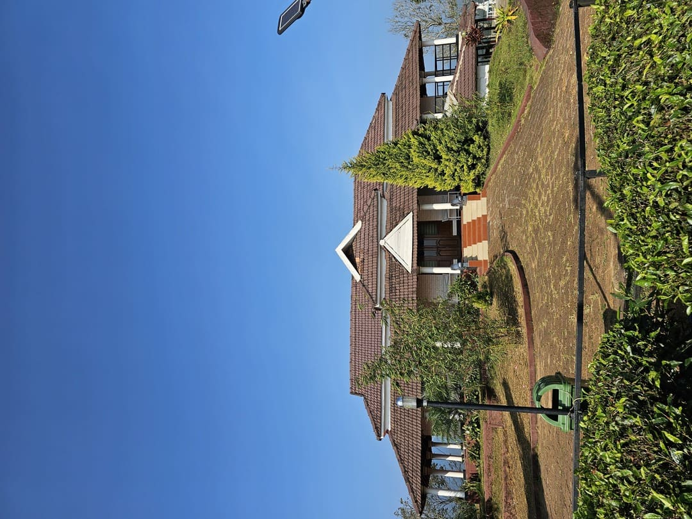
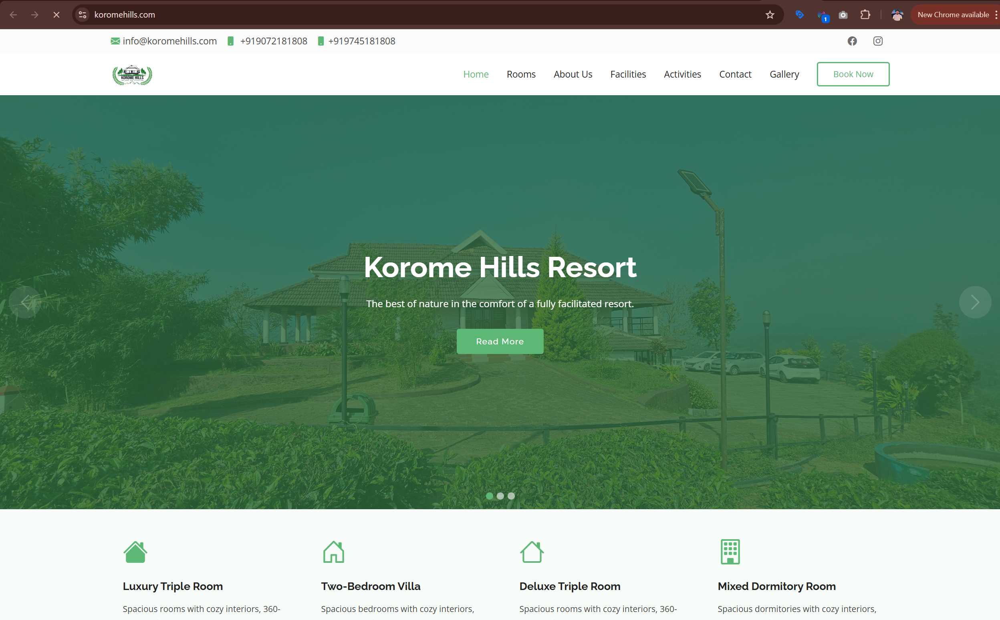
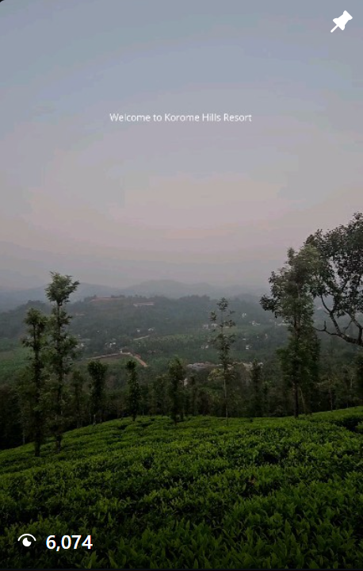
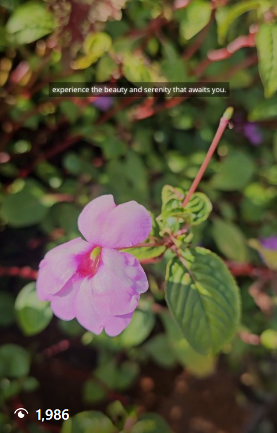
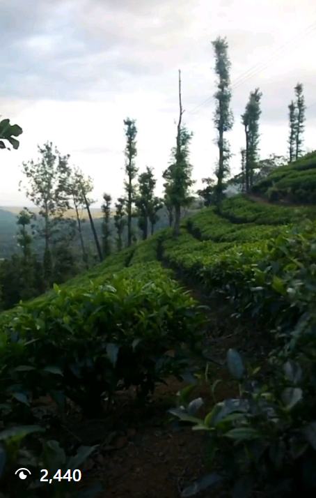

Korome Hills Resort
Building a resort website and digital presence that captured the experience, not just the location.
Korome Hills Farms and Resorts is a retreat in Wayanad, Kerala. My role focused on shaping the resort’s digital presence through website creation, visual storytelling, and social media content. The goal was to present the beauty of the property more effectively online, expand reach through digital channels, and create a stronger first impression for potential visitors.

Hospitality / Resort
Worked with a destination-based hospitality brand where visual presentation was central to digital marketing.
Wayanad, Kerala
The property’s appeal depended heavily on communicating scenery, experience, and atmosphere online.
Website, Instagram, Facebook
The work focused on creating a stronger digital presence across the resort’s core online touchpoints.
Better reach and stronger presentation
The objective was to attract a wider audience and showcase the resort experience more effectively online.
A scenic resort needed a digital presence that matched the experience on site
Hospitality brands sell atmosphere as much as accommodation. For Korome Hills, the digital presence needed to communicate the setting, the calm, and the appeal of the retreat in a way that static listing-style information could not.
The challenge
The resort wanted to attract a wider audience and present itself more effectively online. That meant building a more visually engaging website, creating stronger social media content, and improving discoverability through better digital presentation and search visibility.
What the work needed to do
- Present the property in a more visually compelling way
- Create a dedicated website that reflected the resort experience
- Support social media growth through visual content
- Improve online visibility through basic SEO direction
- Strengthen trust through better digital presentation and review awareness
Website creation, content support, and digital visibility planning
My role focused on creating the digital foundation for the resort’s online presence. That included designing the website, guiding how the property should be presented on social media, and using visual content to help communicate the experience more effectively.
Website and digital presence
- Created the resort website to showcase the property online
- Structured the site around visuals, experience, and discovery
- Helped improve the brand’s online presentation
- Supported basic visibility and SEO direction
Content and social support
- Created and supported social media content direction
- Used visual storytelling to showcase the property
- Produced reels highlighting the location and experience
- Helped position the brand more effectively for leisure audiences
Built the digital presentation around scenery, atmosphere, and experience
The work focused on helping the resort look and feel more compelling online. Rather than treating it like a simple property listing, the approach centered on making the destination itself the core of the presentation.
Website design and structure
Created a dedicated website that presented the resort through visuals, layout, and clear digital storytelling.
- Built the site to reflect the atmosphere of the property
- Used a more experience-led structure instead of a generic layout
- Showcased scenery, accommodation, and overall appeal
- Created a more polished online first impression
Visual storytelling
Positioned the property through imagery and content that made the destination feel more tangible and aspirational.
- Focused on scenic and lifestyle-led presentation
- Used visuals to communicate mood and experience
- Supported the resort’s brand perception through better presentation
- Helped the property feel more distinctive online
Instagram reel content
Created short-form video content to help the property feel more alive and discoverable across social platforms.
- Produced reels based on the resort’s views and experience
- Created social-first content for engagement and reach
- Used movement and pacing to make the property more immersive
- Extended the brand beyond static photography
Visibility and SEO support
Helped strengthen the resort’s discoverability through cleaner digital presentation and search-minded improvements.
- Supported basic SEO direction for the website
- Improved how the property was presented online
- Contributed to the resort’s ability to attract a wider audience
- Aligned presentation with discoverability goals
Reputation and trust support
The digital direction also considered how online perception and customer confidence could be strengthened.
- Supported better overall brand presentation
- Considered review and trust-building as part of visibility
- Made the resort feel more credible and destination-worthy
- Helped the digital presence feel more complete
Hospitality-focused positioning
Framed the brand in a way that spoke to escape, experience, and destination appeal rather than just accommodation details.
- Shifted the focus from listing information to experience
- Presented the property through a leisure audience lens
- Used content to support travel and getaway appeal
- Built a more compelling digital brand presence
What this work changed
Korome Hills gained a more polished and visually engaging online presence through a dedicated website and content built around the destination experience.
Stronger digital presentation
The resort gained a dedicated website and a more cohesive online identity that better reflected the property’s appeal.
More compelling content
Reels and visual storytelling helped the property feel more immersive and attractive across digital platforms.
Better destination positioning
The brand was presented more like a getaway experience and less like a generic accommodation listing.
Examples from the workstream
These examples show how the resort was presented across the website and social content.

Resort website
Website created to showcase the property, its atmosphere, and the overall destination experience more effectively online.

Instagram reel content
Short-form content created to highlight the mood, views, and experience of the resort on social media.

Scenic visual storytelling
Content designed to make the property feel immersive and memorable through movement, pacing, and atmosphere.

Resort experience reel
Another example of hospitality-focused content created to extend the resort’s digital reach and strengthen its online appeal.
Property visuals
Click any image to view it larger.
{kind=link}
{kind=link}
{kind=link}
{kind=link}
{kind=link}
What this project says about how I work
- I use website design and content to translate real-world experiences into stronger digital presentation.
- I understand how hospitality brands need more than information. They need atmosphere, trust, and aspiration.
- I can combine visual storytelling with practical digital visibility goals.
- I approach website and social content as part of one connected brand experience.
Want to see another project?
Explore another case study covering restaurants, education, logistics, healthcare consulting, or real estate performance marketing.